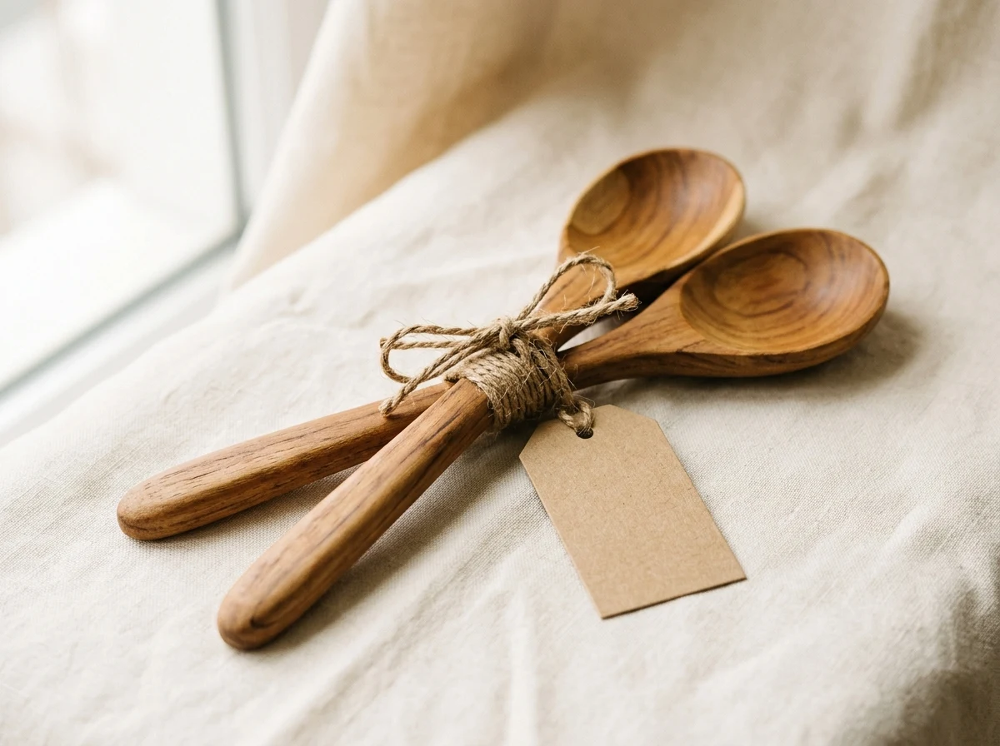

Menambahkan inisial nama dan tanggal pernikahan adalah sentuhan personal yang menjadikan souvenir bernilai sejarah. Namun, personalisasi yang terlalu mencolok bisa membuat tamu canggung menggunakannya di ruang publik. Pelajari cara penempatan yang halus, proporsional, dan berkelas.
Mencantumkan nama kedua mempelai pada cinderamata pernikahan merupakan tradisi yang telah mengakar. Namun, ada perbedaan besar antara souvenir yang dipersonalisasi secara elegan dengan souvenir yang dipenuhi tulisan berukuran raksasa yang mendominasi seluruh permukaan barang.
1. Mengapa Personalisasi yang Halus Lebih Disukai Tamu?
Bayangkan Anda menerima tumbler stainless steel berkualitas tinggi, namun di bagian tengahnya tercetak foto mempelai berukuran penuh beserta nama lengkap dalam ukuran font mencolok. Sebagian besar orang akan merasa canggung membawa tumbler tersebut ke ruang rapat kantor atau gym.
Sebaliknya, jika tumbler tersebut memiliki grafir laser inisial monogram berukuran 2 cm di bagian bawah, barang tersebut akan terlihat seperti cinderamata butik eksklusif yang bangga dibawa ke mana pun. Inilah esensi dari subtle personalization yang selalu kami terapkan di layanan souvenir custom Souvenir Pernikahan.
2. Ragam Metode Personalisasi pada Souvenir
Berikut adalah beberapa teknik penyematan nama dan tanggal yang paling populer dan tampak elegan:
A. Laser Engraving (Grafir Laser)
Sangat cocok untuk material logam (tumbler stainless), kayu (sendok garpu cutlery, tatakan gelas), dan bambu. Hasil grafir tidak menggunakan tinta melainkan mengikis permukaan secara presisi mikron sehingga bersifat permanen, anti luntur, dan terlihat sangat rapi.
B. Hangtag Kertas Bertekstur & Pita Satin
Metode ini adalah yang paling fleksibel. Nama lengkap, tanggal pernikahan, kutipan ayat atau kata mutiara, dan ucapan terima kasih dicetak pada kertas tebal (kertas linen, concord, atau craft) lalu diikatkan ke kemasan menggunakan pita satin. Tamu dapat menyimpan hangtag tersebut tanpa merusak fungsi produk intinya.
C. Hot Stamping Foil Emas (Gold Foil / Emboss)
Memberikan kilau keemasan atau perak yang mewah pada tutup hardbox, label stiker lilin kedelai, atau pouch velvet. Sangat pas untuk konsep pesta pernikahan mewah bernuansa royal.
3. Tabel Panduan Memilih Teknik Berdasarkan Material
Setiap material souvenir memiliki karakteristik personalisasi yang berbeda agar hasilnya optimal:
| Material Produk | Metode Rekomendasi | Daya Tahan | Karakter Visual |
|---|---|---|---|
| Stainless / Logam | Laser Engraving | Permanen Selamanya | Minimalis, Elegan, Presisi |
| Kayu Alami / Bambu | Laser Engraving / Stempel Panas | Sangat Awet | Warm, Organik, Rustic |
| Kain Kanvas / Blacu | Sablon Tinta Ramah Lingkungan | Awet (Bisa Dicuci) | Artistik, Kasual |
| Kaca / Botol Minyak | Stiker Kertas Tekstur / Hangtag | Tinggi (Tahan Percikan) | Bersih, Vintage Modern |

4. Tips Pemilihan Font dan Format Penulisan Nama
Kombinasi tipografi yang harmonis akan meningkatkan estetika cinderamata Anda:
- Padukan Script & Serif: Gunakan font kaligrafi mengalir (script) untuk inisial
nama panggilan (contoh: R & D), lalu gunakan font serif atau sans-serif bersih berjarak
renggang (letter-spacing) untuk tanggal (contoh:
20 . 10 . 2026). - Hindari Huruf Kapital Semua pada Font Sambung: Font script kaligrafi akan sangat sulit dibaca jika dipaksa menggunakan huruf kapital seluruhnya.
- Pastikan Kontras Warna Nyaman: Pada media kayu muda atau kertas kraft, gunakan warna tinta hitam arang atau cokelat tua agar mudah terbaca.
Ingin mengecek katalog souvenir pernikahan kami yang sudah termasuk opsi personalisasi lengkap? Jelajahi Paket Souvenir Pernikahan Souvenir Tradisional atau diskusikan kebutuhan kustom Anda bersama kami.
Ingin Melihat Contoh Mockup Nama Anda?
Kirimkan inisial nama dan tanggal pernikahan Anda via WhatsApp. Tim desainer Souvenir Pernikahan siap membuatkan visual preview secara cuma-cuma.
Konsultasi Mockup DesainPertanyaan Umum (FAQ)
Kesimpulan
Personalisasi yang berkelas adalah personalisasi yang menghargai kenyamanan penerimanya. Dengan proporsi ukuran yang tepat dan pilihan teknik cetak yang selaras dengan material barang, souvenir pernikahan Anda akan selalu dikenang dengan hangat.

Paket Souvenir Custom Eksklusif
Wujudkan souvenir dengan grafir laser presisi tinggi, hangtag kaligrafi bertekstur, dan pita satin pilihan Anda.